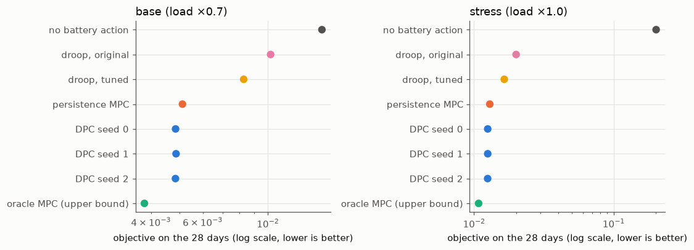

06 Oracle subset: all controllers on the same 28 days#
The oracle MPC knows the exact future load and PV over its 144-step horizon. It is an upper bound, not a controller that could be built. To keep its cost manageable, it was run on every 4th full validation day (28 days), each day on its own with SoC reset to 0.5 at the start. All other controllers were run on exactly these days with the same resets, so the numbers here differ slightly from the full validation run.
Read these results with the following caveats
Preliminary, validation part only. The test part is sealed and has not been evaluated. Every number comes from one network (IEEE 33-bus) and from the validation part, which was also used to select the DPC policy, so the DPC numbers are optimistically biased.
Data. Solar (Utrecht, 2014-2017) and load (Portugal, 2012-2014) are real measurements, but they come from different places and years and share no real weather. The PV size of 3.9 MW was chosen after a no-control check on the training part only (at 2.6 MW no training step exceeded 1.05 pu).
RQ2 was reworded on 2026-11-04, before any controller existed, because extreme ramps and voltage violations rarely coincide in this data (see Decisions).
Training bias. 30% of the training windows contain an extreme solar ramp.
Differences from the proposal’s eq. (16). Degradation and C-rate terms are off in every variant (“degradation off”). A terminal SoC term with a 30-70% dead zone is added and is not in eq. (16).
The safety layer goes beyond the proposal: it also limits P by the stored energy (SoC kept within 10-90%), not only by the inverter limits of eqs. (4)-(7). It does not guarantee voltage feasibility.
Active power use is marginal and not seed-robust. Voltage is regulated mostly with reactive power Q; the selected policy passes the pre-specified “P is used” threshold on 1 of 3 seeds.
The MPC baseline is a convex LinDistFlow MPC with soft voltage limits and a lossless SoC model, not the AC-OPF MPC named in the proposal, and it was not tuned. Speed comparisons are therefore against a convex MPC. The oracle MPC uses exact future data and is an upper bound, not a real controller.
Ablations. “penalty-only” includes a soft inverter-limit penalty that was added on purpose (decision D1). Variants without the safety layer can break the inverter limits; such steps are physically impossible operation and are reported as shares, not as achievable performance.
Corrections to the proposal: a discharging battery enters the net load with a minus sign, and the left side of eq. (9) is P, not 2P. Results computed before the SoC energy limit was added (2026-11-05) are superseded and not shown.
Source: results/m4_oracle_subset/plan.json, commit 2c70d3f (private development history), code differed from that commit: False
Days: 28 of 110 full validation days, 8,064 steps per regime.
| objective | VVR | losses (kW) | mean |P| (MW) | mean |Q| (Mvar) | end-of-day SoC | safety layer changed action | ||
|---|---|---|---|---|---|---|---|---|
| regime | controller | |||||||
| base (load ×0.7) | no battery action | 0.01528 | 0.347% | 27.7 | 0.0000 | 0.000 | 0.50 - 0.50 | — |
| droop, original | 0.01022 | 0.000% | 23.3 | 0.0000 | 0.119 | 0.50 - 0.50 | — | |
| droop, tuned | 0.00827 | 0.000% | 25.5 | 0.0000 | 0.240 | 0.50 - 0.50 | — | |
| persistence MPC | 0.00511 | 0.000% | 27.3 | 0.0109 | 0.398 | 0.32 - 0.43 | 0.00% | |
| DPC seed 0 | 0.00485 | 0.000% | 26.1 | 0.0278 | 0.405 | 0.32 - 0.34 | — | |
| DPC seed 1 | 0.00486 | 0.000% | 25.9 | 0.0274 | 0.401 | 0.32 - 0.34 | — | |
| DPC seed 2 | 0.00484 | 0.000% | 25.8 | 0.0283 | 0.400 | 0.30 - 0.32 | — | |
| oracle MPC (upper bound) | 0.00379 | 0.000% | 21.7 | 0.0767 | 0.397 | 0.10 - 0.17 | 0.80% | |
| stress (load ×1.0) | no battery action | 0.20154 | 28.261% | 54.3 | 0.0000 | 0.000 | 0.50 - 0.50 | — |
| droop, original | 0.02001 | 0.025% | 42.2 | 0.0000 | 0.204 | 0.50 - 0.50 | — | |
| droop, tuned | 0.01646 | 0.000% | 43.6 | 0.0000 | 0.334 | 0.50 - 0.50 | — | |
| persistence MPC | 0.01296 | 0.000% | 43.5 | 0.0096 | 0.462 | 0.32 - 0.41 | 0.00% | |
| DPC seed 0 | 0.01253 | 0.000% | 42.0 | 0.0280 | 0.462 | 0.30 - 0.32 | — | |
| DPC seed 1 | 0.01253 | 0.000% | 42.0 | 0.0283 | 0.463 | 0.30 - 0.32 | — | |
| DPC seed 2 | 0.01251 | 0.000% | 42.0 | 0.0289 | 0.463 | 0.29 - 0.31 | — | |
| oracle MPC (upper bound) | 0.01078 | 0.000% | 38.3 | 0.0759 | 0.465 | 0.10 - 0.18 | 0.71% |
— means not applicable or not recorded for that controller. For DPC the safety layer is part of the policy itself, so no separate change of the action is recorded.

Oracle MPC: share of horizon steps where the forecast had to hold the last known value: base (load ×0.7) 0.009%, stress (load ×1.0) 0.009%. Its action is changed by the safety layer on 0.80% (base (load ×0.7)), 0.71% (stress (load ×1.0)) of battery steps, because its lossless SoC model differs from the real efficiency near the SoC limits.
Every day starts at SoC 0.5 (the reset value after a data gap in configs/m3.json). The oracle MPC ends the days at SoC 0.10-0.18, while DPC ends them at 0.29-0.34. The oracle therefore also discharges more of the stored energy over each day; the stored results do not separate how much of its advantage comes from this and how much from knowing the future.
Descriptive, validation part only: of the objective gap between the persistence MPC and the oracle MPC, DPC (median over seeds) closes 20% in the base (load ×0.7) regime and 20% in the stress (load ×1.0) regime.
Reading (descriptive only): on these validation days DPC lies between the persistence MPC and the oracle bound in both regimes. This is one network, one untuned convex MPC, and the validation part, which was also used to select the DPC policy; it is not a test result.